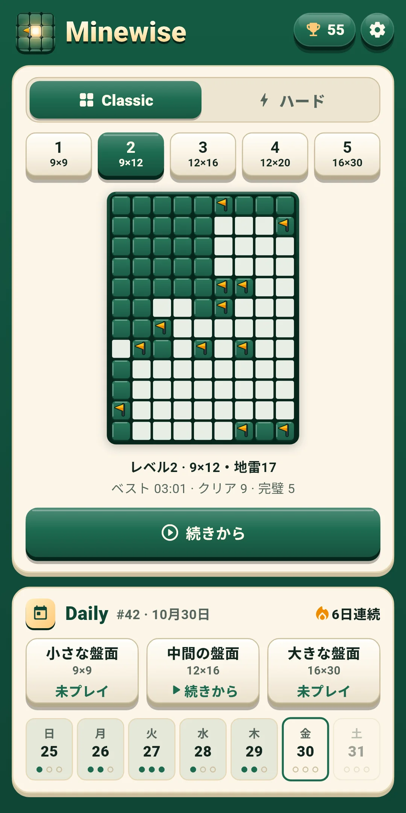
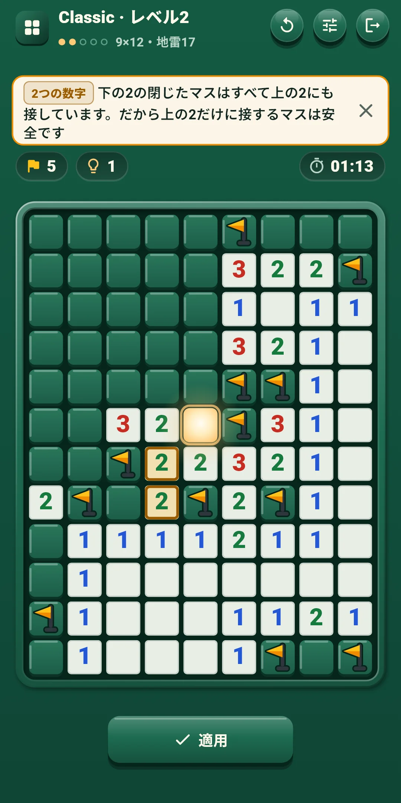
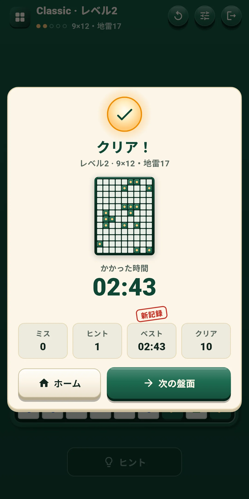
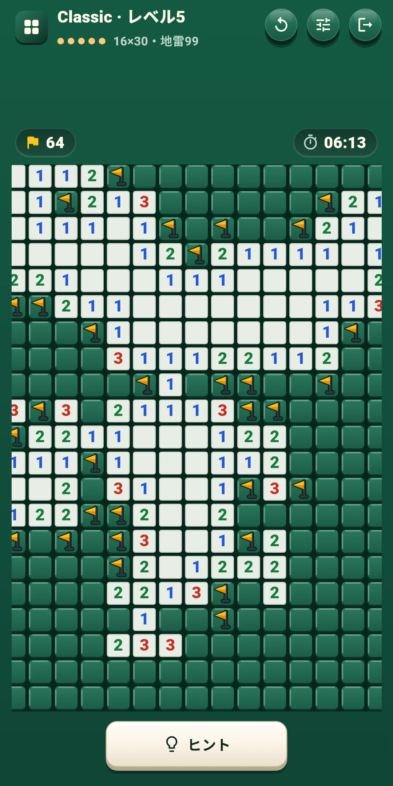
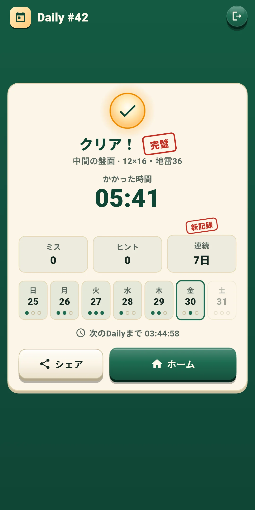
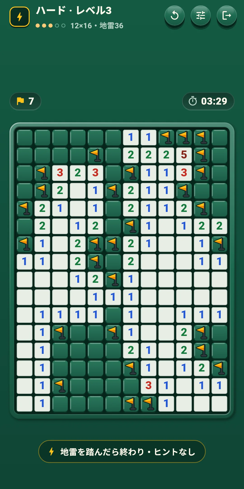
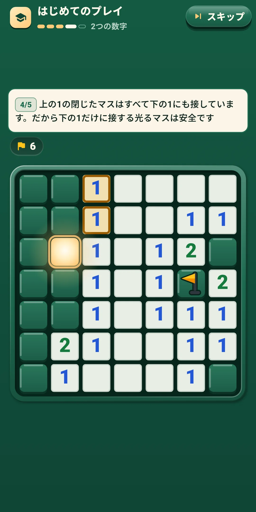

Minewise
遊び方
遊び方







| アプリ名 | Minewise |
|---|---|
| バージョン | 1.0.1 |
| 開発 | Willee Project |
| 対応プラットフォーム | Android |
数字の手がかりだけで地雷を避け、地雷ではないマスをすべて開ける、推測のいらないマインスイーパーです。どの盤面も光るスタートマスから始まり、当てずっぽうなしで、論理だけで最後まで解けます。
チュートリアルは、7×7の盤面で「スタートマス → 数字と旗 → まとめて開ける → 2つの数字 → ひとりで解く」の5段階で基本を教えます。段階ごとに見る数字と地雷を光らせ、タップするマスだけが反応します。ヒントは使った考え方を名札で教えます。1つの数字、2つの数字、複数の数字、残りの地雷数、すべての配置の5つで、意味は次のとおりです。
レベル1の盤面は、1つの数字と2つの数字だけで解けます。レベル2からは、複数の数字や残りの地雷数まで必要な盤面も出ます。もっと難しいコツは、ヒントが理由といっしょに教えてくれます（4章）。
画面上部の行の左には、モード名とレベル（例: Classic · レベル3）、その下にレベルの点と盤面の大きさ・地雷の数（例: 12×16・地雷36）が出ます。DailyにはDailyの番号（#12）と盤面の種類が出ます。右のボタンは次のとおりです。
| ボタン | すること |
|---|---|
| やり直す（↻） | この盤面を最初からと新しい盤面を選ぶ画面を開きます（下） |
| クイック設定 | 効果音・バイブレーション・演出・操作・盤面の設定（5章）をゲーム画面のまま変えられる画面を開きます。上のほうを押すか、下に引くと閉じます |
| 戻る（ドアの形） | ホームに戻ります。解いている盤面は自動で保存されます |
盤面のすぐ上の行:
盤面の下の行:
| ボタン | すること |
|---|---|
| ヒント | 次に開けるマスを理由といっしょに教えます。回数無制限です（4章）。スタートマスを開ける前と、盤面が終わったあとは押せません |
| [開ける|旗] | 操作Bのときだけ出ます。タップしたマスを開けるか、旗を立てるかを決めます |
やり直すの画面:
| 選ぶもの | 内容 |
|---|---|
| この盤面を最初から | 盤面をスタートマスを開ける前の状態に戻します。Classicは時間・ミス・ヒントも最初から数え、Dailyはその日の時間・ミス・ヒントをそのまま数えます。スタートマスを開ける前は薄く表示されて押せません。ハードにはありません |
| 新しい盤面（Classicとハード） | この盤面をやめて、同じレベルの別の盤面を解きます。やめた盤面はクリアに数えません（ハードは6章）。Dailyにはありません |
ヒントボタンが、次に開けるマス1つを理由といっしょに教えます。ヒントは回数無制限で無料です（ハードを除く）。スタートマスを開けてから使えます。
同じ場所のボタンを3回押します。ヒント → マスを見る → 適用です。
設定の操作と盤面でオン・オフします。ゲーム中はクイック設定ですぐに変えられます。
| レベル | 盤面の大きさ | 地雷の数 |
|---|---|---|
| 1 | 9×9 | 10 |
| 2 | 9×12 | 17 |
| 3 | 12×16 | 36 |
| 4 | 12×20 | 50 |
| 5 | 16×30 | 99 |
Minewise Daily 小さな盤面 #12 ✅ 03:41 ミス 0・ヒント 1 🔥 5日連続
#12はDailyの番号で、その隣はかかった時間（分:秒。1時間を超えると時:分:秒）です。1行目の「Minewise Daily」はどの言語でも同じで、同じ盤面を解いた人どうしで比べられるように盤面の種類も書きます。2行目はミスとヒントの数、3行目は連続記録です（2日以上のときだけ）。最初のDailyが#1で1日ずつ増えるので、番号が同じなら同じ盤面です。
ホーム右上のトロフィーボタンで開きます。ボタンにはクリアした盤面の数が出ます。
ホーム右上の歯車で開きます。グループは4つです。ゲーム中はクイック設定ボタンで、前の3つのグループをすぐに変えられます。
| 項目 | 内容 |
|---|---|
| 効果音 | マスを開けるとき、旗を立てる・外すとき、数字をタップして周りを開けるとき、地雷を踏んだとき、ヒント・盤面のクリア・結果のスタンプなどの音をオン・オフします |
| バイブレーション | 旗を立てるときは短く、外すときはもっと軽く、地雷を踏んだときは重く、盤面をクリアすると長く震えます。オン・オフします |
| エフェクトを減らす | すべての演出をまとめて控えめにします。オンの間は、下の動き・光・紙吹雪はオフと同じになります |
| 動き・光・紙吹雪 | 演出ごとにオン・オフします。動きは開くときの波紋・旗の弾み・解除、光はスタートマスの光・爆発・クリアの光、紙吹雪は結果画面です。盤面全体が揺れる演出はありません |
| 項目 | 内容 |
|---|---|
| 操作 | タップ・長押し（最初の設定）か[開ける|旗]ボタンから選びます（3章） |
| 長押しの時間(ms) | 250・300・350・400・500から選びます。最初は350です。タップ・長押しのときだけ使います |
| 数字をタップして周りを開ける | 周りの旗の数が数字と同じなら、残りのマスを開けます。最初はオンです |
| 項目 | 内容 |
|---|---|
| 時間を表示 | 盤面の上に時間を表示します。最初はオンです |
| ミスをすぐ表示 | 間違った旗にすぐ×を付けます（ハードを除く）。最初はオフです |
| 大きな数字 | 盤面の数字を大きく表示します。最初はオフです |
| 項目 | 内容 |
|---|---|
| 言語 | 端末の言語に従う（最初の設定）か、一覧から選びます |
| プライバシー設定 | 広告の同意画面をもう一度開きます。同意が必要な地域（ヨーロッパなど）でだけ表示されます |
| 遊び方 | 目的・数字・光るスタートマス・操作・ミス・ヒント・Daily・ハードの短いルール画面です |
| チュートリアルをもう一度 | チュートリアル（「はじめてのプレイ」）をもう一度遊びます |
| このアプリについて | バージョン、この説明（遊び方）、プライバシーポリシー、オープンソースライセンス |